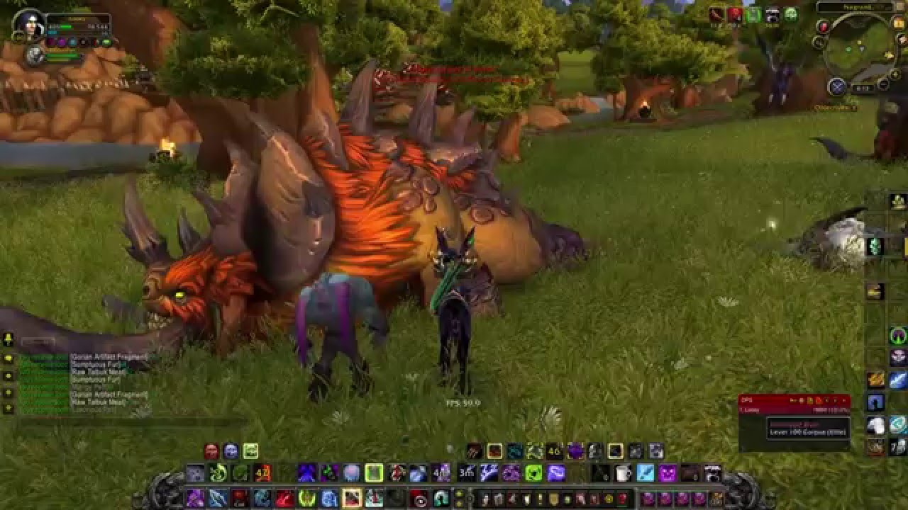
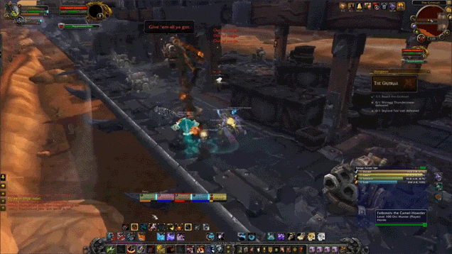
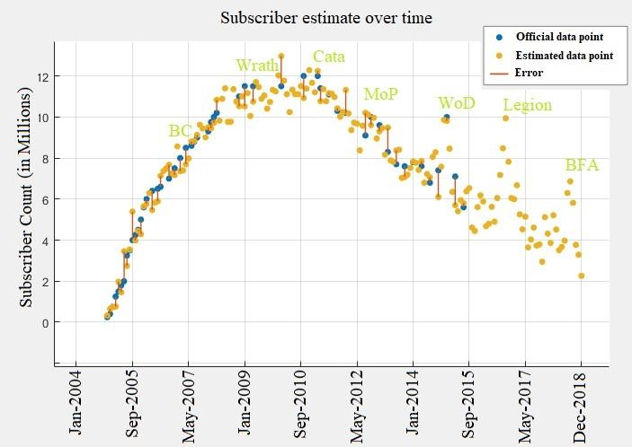
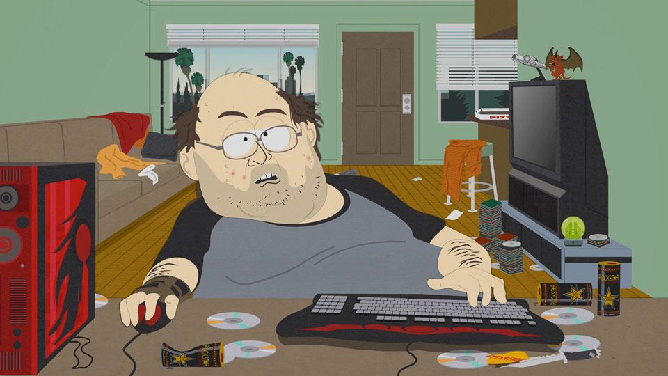

Introduction
World of Warcraft (WOW) is a MMORPG (Massively Multiplayer Online + Role-Playing Game) made by Blizzard Entertainment and released on November 23, 2004. It immerses you in a fictional world called Azeroth in which you can do quests, kill monsters, adventure, all while cooperating and sometimes fighting with other people. It is also the game that popularized subscription-based payment models.
Gameplay
In World of Warcraft a player controls a character avatar in third-person perspective. As the player explores, completes quests, and kills monsters the character will gain experience with which they will be able to attain new skills, thereby increasing their strength. This strength can be put to use by doing large-scale PVE (player versus environment) content or PVP (player versus player). The mechanics of the combat are quite static as opposed to other newer MMO's: the spells and attacks require only a press of a button to activate and there is not much room for countering the attacks of the enemy. Nonetheless, the combat is still rewarding and satisfying.
|  |
| A deaht knight chracter in PVE |
|  |
| Gameplay from a dungeon |
Background
World of Warcraft has its origins in the Warcraft RTS series by Blizzard. Following the success of the series, blizzard wished to have more creative freedom to be able to explore the Warcraft universe, finding the RTS genre not very suited to such endeavours. They then got inspired by the newly released EverQuest (another MMORPG) and decided that the MMO genre would be best suited for players to delve into the lore of Warcraft.
Release
The release of WOW was eagerly awaited by many thanks to the notoriety of the Warcraft series as well as some effective marketing. Upon release it was met with great success considering that at the time not many people had a good active internet connection to be able to consistently play the game. It also received great reviews and little criticism, a testament to its quality. It was intended to be a casual MMORPG contrary to others on the market, planning to attract many new players.
New Records
Only 2 years after its release WOW had reached 3 million monthly subscribers, an unprecedented number at the time, but which would ultimately be dwarfed. The game receives on average an expansion every four years; the first two met with great success, while the others were quite heavily criticised for straying from the original vision of the game. The peak player count was reached during the second expansion Wrath of the Lich King with 12 million subscriptions. After this expansion the player base shrunk, owing to the sub-par expansions and other competing MMO’s. Nowadays the number of subscribers usually hovers around 4 million.
|  |
| A chart of WOW subscribers over time |
Legacy
For many people, WOW constituted an entry into the MMORPG genre and is what got them interested in it in the first place. Even if today it is not as popular as it once was, it still retains a large player base and is a constant in any MMO fan’s library, to which they will someday return. World of Warcraft was the game that popularised the MMO genre and even brought it to mainstream attention. This was not only thanks to the number of people playing it but also some bad publicity from unfortunate events relating to videogame addiction. Hence the stereotypical WOW player:
|  |
| The typical WOW player according to South Park |
It certainly pushed the game industry in a more internet orientated direction compared to the LAN days that preceded it. For better or worse it influenced the gaming scene and gaming culture in general, completely altering its landscape.